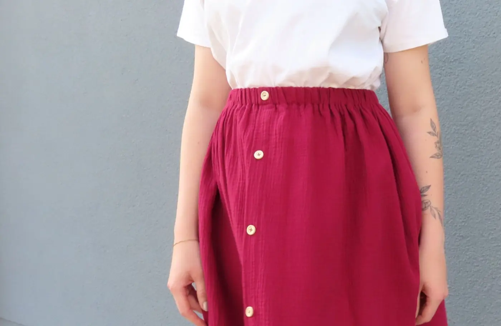
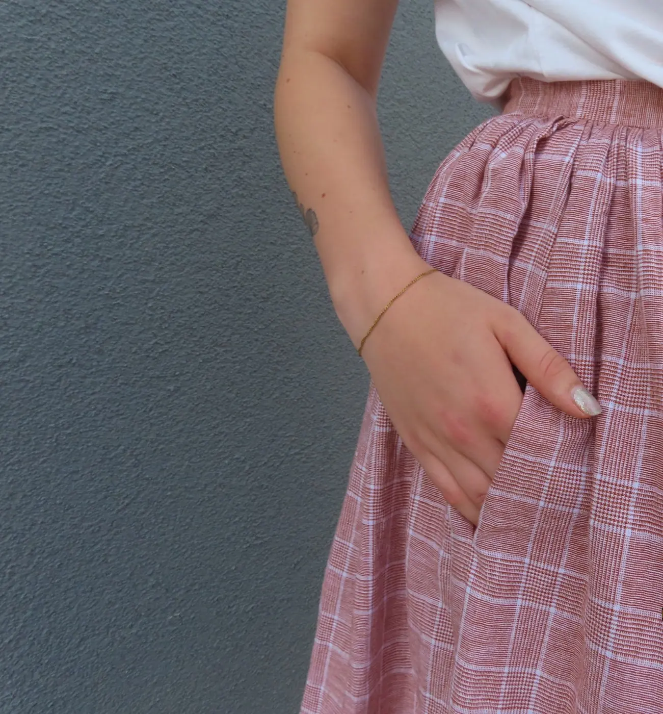

Mini-Atelier Ramsen, Pfalz
Cathrin Raasch Atelier · Handgemachte Einzelstücke aus Ramsen, Pfalz
Vintage-inspirierte Kleidung, mit Hand und Herz genäht. Röcke auf deine Maße, Kleider aus alter Bettwäsche, Kragen aus Liberty-Stoff.
Ich nähe Röcke, Kleider und Kragen, die man lange behält: auf deine Maße, oft aus Stoffen, die schon ein Leben hatten.
Alles, was du hier siehst, kannst du direkt auf Etsy bestellen. Besondere Wünsche bei Stoff, Größe oder Länge? Schreib mir einfach.
Shop auf Etsy besuchen
So bestellst du
- 01
Aussuchen
Hier stöbern, dann im Etsy-Shop bestellen.
- 02
Maße senden
Bei Maßteilen: Taille und Wunschlänge in die Bestellnachricht.
- 03
Genäht
Ich nähe dein Stück einzeln in meinem Atelier in Ramsen.
- 04
Verschickt
Plastikfrei im Graskarton, auf Wunsch als Geschenk.
Getragen, nicht inszeniert.
Zwölf Looks aus dem Atelier und von draußen. Wisch dich durch oder zieh mit der Maus, ein Klick aufs Bild zeigt dir alle Details.
01 / 12
Lieblingsstücke
Die Teile, die ich gerade am liebsten nähe und die am häufigsten mit der Post zu euch reisen.
Alle Stücke 14
Jedes Teil entsteht einzeln in meinem Atelier. Was „Einzelstück“ heißt, gibt es genau einmal, Maßanfertigungen nähe ich für dich auf Bestellung.
Noch mehr Farben und Varianten findest du im Shop. Alle Artikel auf Etsy

Hi, ich bin Cathrin.

Was ihr schreibt
Ein paar Nachrichten aus meinem Etsy-Shop, über die ich mich besonders gefreut habe.
Weitere Bewertungen auf EtsyWo du mich triffst
Märkte, offenes Atelier, Nähkurse und alles, was gerade wichtig ist. Ich halte die Liste aktuell.
Nächste Termine
Aktuelle Links
Komm vorbei, probier an.
Bei einer Anprobe nehmen wir in Ruhe deine Maße, du fühlst die Stoffe, und wir legen Länge, Farbe und Details zusammen fest. Ideal für Röcke und Kleider auf Maß, oder wenn du einfach mal schauen möchtest.
- Wo
- Dauer
- Kosten
- Kostenlos und unverbindlich

Ramsen, Pfalz
67305 Ramsen
Pfalz, Rheinland-Pfalz
Die genaue Adresse bekommst du mit deiner Terminbestätigung.
Karte anzeigen?
Zum Schutz deiner Daten lade ich Google Maps erst, wenn du es möchtest. Dabei werden Daten an Google übertragen.
In Google Maps öffnenGut zu wissen
Deine Frage ist nicht dabei? Schreib mir über Etsy oder Instagram, ich antworte persönlich.